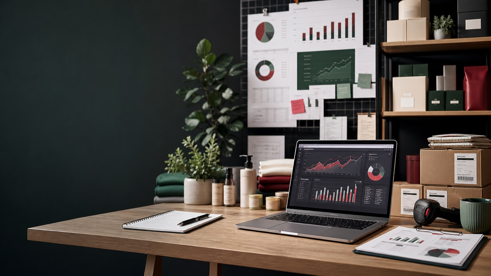

Диагностика потенциала
Разбираю товар, нишу, текущие продажи, конкурентов, маржинальность и точки роста, чтобы понять, где проект может прибавить быстрее всего.

Левон Степанян • операционный партнер Wildberries
Партнерство для селлеров, производителей, оптовиков и брендов, у которых уже есть продуктовая база. Я беру на себя операционное развитие: экономику, карточки, рекламу, аналитику, гипотезы и ежедневные решения по росту.
Показатели
Это может быть действующий магазин, собственное производство, крупный опт, бренд или товарная линейка, которую можно системно вывести и развивать на маркетплейсе.
Партнерство
Формат подходит, когда нужен не внешний советчик, а человек, который включается в развитие магазина и отвечает за движение по цифрам.
Разбираю товар, нишу, текущие продажи, конкурентов, маржинальность и точки роста, чтобы понять, где проект может прибавить быстрее всего.
Формирую план по ассортименту, ценам, карточкам, рекламе, акциям и приоритетам, чтобы магазин развивался не хаотично, а по понятной системе.
Улучшаю видимость товара, упаковку карточек и рекламные кампании, чтобы трафик приводил к заказам, а бюджет работал на рост.
Держу в фокусе аналитику, остатки, акции, поставки, динамику продаж и регулярные решения, от которых зависит результат магазина.
Подход
Сначала смотрю потенциал проекта, затем выстраиваю систему действий и регулярно сверяю решения с фактическими показателями.
Смотрим товар, нишу, маржинальность, складские возможности, текущий магазин или готовность к запуску.
Определяем зону ответственности, цели, экономику партнерства и первые приоритеты в развитии.
Запускаем изменения, отслеживаем динамику, усиливаем рабочие гипотезы и убираем лишние действия.
Результаты в цифрах
Один проект до и после входа в партнерство: ноябрь-декабрь как база, январь-февраль-март как период системного роста.
Контакты
Напишите, какой у вас товар, бренд, производство или действующий магазин, и на какой стадии сейчас проект. Я посмотрю, как можно зайти в развитие продаж на Wildberries.